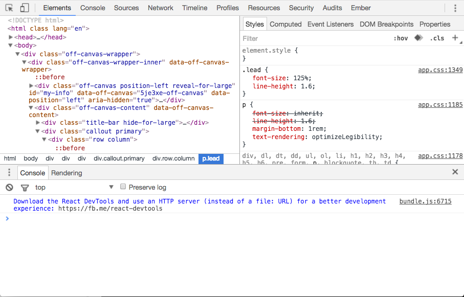
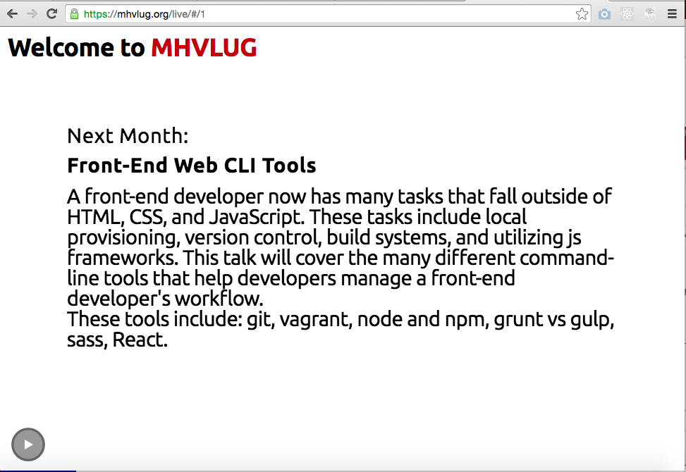
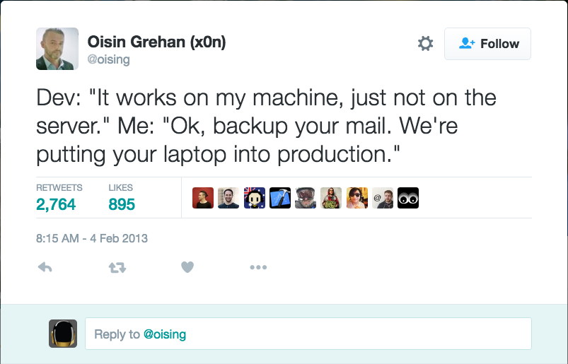

What is Vagrant?
- Create and configure lightweight, reproducible, and portable development environments.
- Provides a single command line interface for multiple virtualization providers - usually VirtualBox.
Multiple Virtualization Providers?
You don't have to use virtualbox.
- VMWare - Fusion and Workstation
- Docker
- Hyper-V
- AWS
What problem is Vagrant solving?
- Serving from the local filesystem can be problematic

What problem is Vagrant solving?
What problem is Vagrant solving?
- Cross Platform Dev Environments - MHVLUG (1) (2)

What problem is Vagrant solving?
- Emulate Production environments

Reproducible Dev Environments
- Scripting things is awesome
Reproducible Dev Environments
- Scripted provisioning
- Works with all sorts of provisioning utilities
- Chef, Puppet, Ansible
- Also Salt, CFEngine, Docker
Vagrant Demo
$ vagrant up- Vagrantfile - complicated Ember-js setup
- Local Vagrantfile with shell scripts